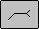
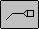

tail note display
Controls whether a tail is displayed and whether the tail is open or closed. If the tail is displayed, you can add text in a box to the right of the tail. The options you set depend on which standard your weld symbols must conform to.
Tail Off
Hides the tail.

Open TailDisplays an open tail.

Boxed TailDisplays a closed tail.